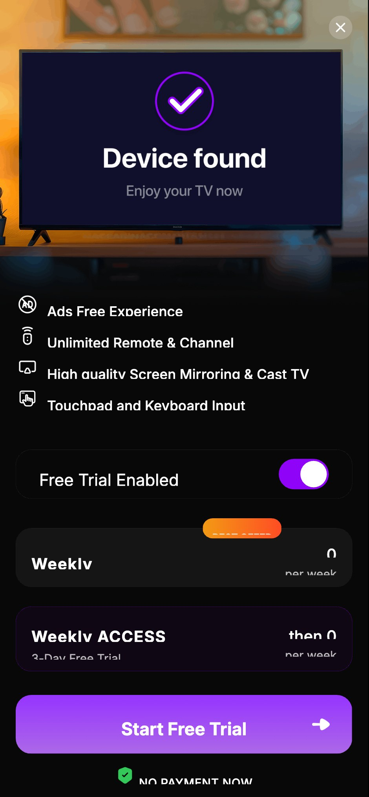
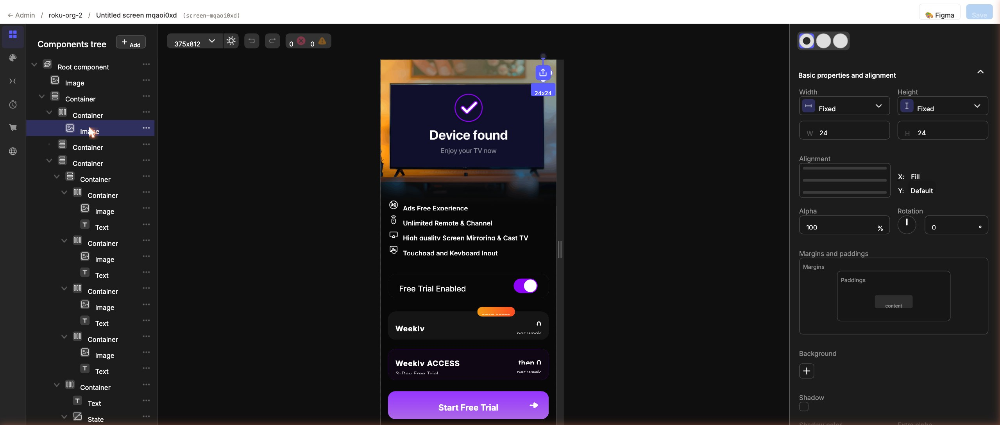
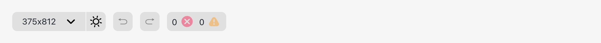
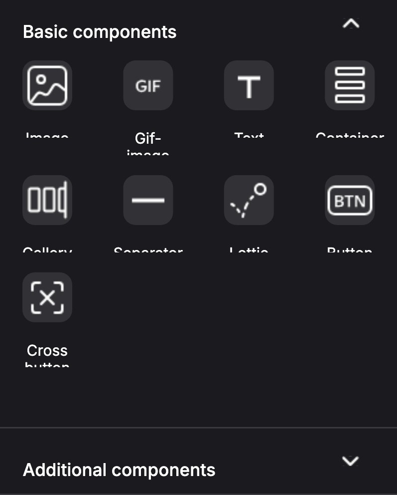
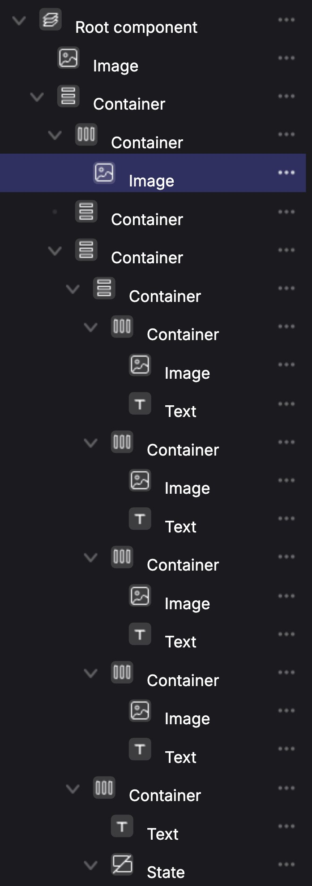
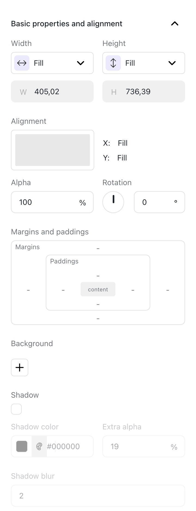
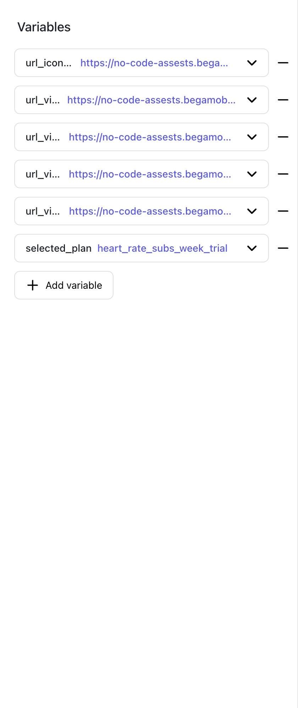
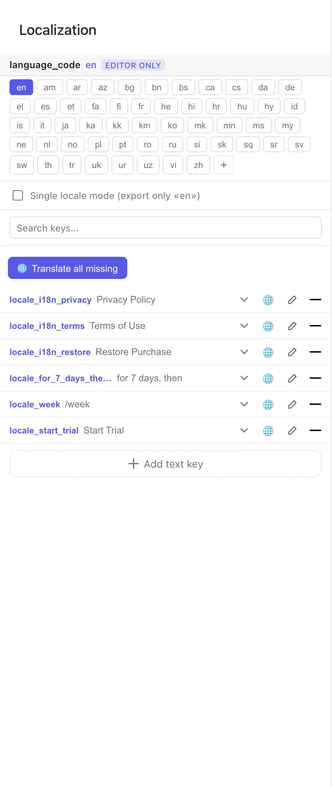
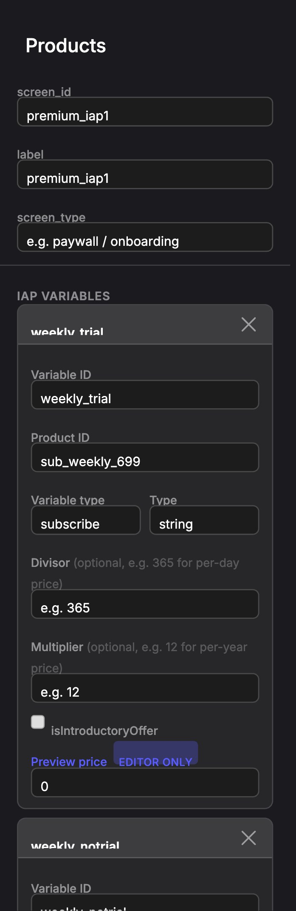

Hướng dẫn dựng UI với iKame NoCode
Tài liệu dành cho người không biết lập trình: cách kéo-thả các khối, sắp xếp bố cục (layout), định dạng (styling) và làm cho màn hình "sống" với biến, gói mua và trạng thái — tất cả ngay trong trình dựng trực quan.
1. iKame NoCode là gì #
iKame NoCode là cách dựng giao diện ứng dụng bằng cách mô tả nó dưới dạng các khối xếp lồng nhau (gọi là JSON), thay vì lập trình từng màn hình. Ưu điểm lớn nhất: màn hình được nạp từ server ("server-driven UI"), nên bạn có thể đổi giao diện mà không cần cập nhật app — chỉ cần sửa cấu hình rồi lưu.
Bạn không cần viết JSON bằng tay. Trình Builder cho phép kéo-thả các khối; phía sau, Builder tự sinh ra JSON đó. Tài liệu này dạy bạn dùng Builder.

3 loại khối bạn sẽ dùng 90% thời gian
| Khối | Là gì | Ví dụ |
|---|---|---|
| Container (Khung chứa) | Một cái hộp để xếp các khối khác vào, theo chiều dọc/ngang/chồng lên nhau. | Một thẻ gói cước, một hàng nút, cả màn hình. |
| Text (Chữ) | Một đoạn chữ. | Tiêu đề, mô tả, nhãn nút, giá tiền. |
| Image (Ảnh) | Một hình ảnh từ đường link (URL). | Ảnh nền, icon, hình minh hoạ. |
★ NoCode Preview — duyệt & xuất bản layout trên S3 #
NoCode Preview là web giúp bạn quản lý remote layout đang lưu trên S3: duyệt bucket → xem/sửa layout bằng chính trình dựng trực quan của iKame NoCode → đẩy (publish) ngược lên S3 kèm phiên bản và làm mới CDN. Nhờ vậy bạn đổi giao diện mà không cần phát hành lại app.
Ứng dụng có 2 phần nhưng bạn chỉ mở một địa chỉ duy nhất: localhost:8080 khi chạy ở máy, hoặc nocode.ikame-solution.com khi dùng bản đã triển khai. Backend nằm sau địa chỉ đó và giữ khoá AWS — web không bao giờ chạm trực tiếp vào khoá. (Đừng mở cổng 5173: đó là dev server nội bộ, mở thẳng sẽ hỏng đăng nhập.)
Đăng nhập
Mở địa chỉ ở trên là app hỏi đăng nhập trước. Tài khoản và quyền lấy từ hệ thống phân quyền chung của công ty, và quyền được cấp theo từng project — có thể bạn sửa được project này mà chỉ xem được project kia. Danh sách project ở cột trái cũng chỉ hiện những chỗ bạn được vào.
Ba màn hình chính
| Màn | Dùng để |
|---|---|
| ① Browser (duyệt) | Cột trái hiện bucket ik-nocode-paywall (region ap-southeast-1) và danh sách Projects kèm số layout. Khu giữa là breadcrumb + ô tìm kiếm + lưới thẻ layout. Mỗi thẻ ghi tên, trạng thái (Live/Draft/Archived), version, kích thước, ngày sửa. Mở thư mục để đi sâu; mở file .json để xem; ảnh/HTML mở cửa sổ xem nhanh. |
| ② Preview (xem & sửa nhanh) | Mở một layout và hiển thị render thật bằng trình dựng (sửa được). Thanh trên có: ← quay lại, tên file (dấu * nếu có thay đổi chưa lưu), Metadata, Preview (mở cửa sổ dùng thử như máy thật), Download, Hướng dẫn, Save draft, Push to S3. |
| ③ Builder (sửa đầy đủ) | Trình sửa đầy đủ: cây khối + preview + bảng thuộc tính/code, palette, hoàn tác/làm lại — chính là trình dựng mà các phần 2–14 của tài liệu này mô tả. Đổi được tên layout, rồi Save draft / Push to S3. Bấm New layout ở Browser sẽ mở Builder với một màn trống (Container dọc, nền trắng). |
Trạng thái layout
- Live — bản đang chạy thật cho người dùng.
- Draft — bản nháp, lưu trên S3 nhưng chưa phát hành.
- Archived — bản lưu trữ, không dùng nữa.
Lưu nháp vs Xuất bản
Save draft ghi vào một chỗ riêng — <project>/.drafts/<tên file> — không đụng vào file mà app đang đọc. Cứ lưu giữa chừng thoải mái. Thẻ layout nào có nháp sẽ được đánh dấu để bạn biết còn việc dở.
Push to S3 mở hộp xác nhận trước khi phát hành, gồm:
- Target — đường dẫn S3 sẽ ghi (ví dụ
s3://ik-nocode-paywall/<project>/<layout>.json). - Thay đổi — so sánh bản cũ và bản mới (diff) để bạn rà trước khi ghi.
- Commit message — ghi chú thay đổi (ví dụ "tăng giá yearly, đổi hero").
- ☑ Bump version & giữ bản cũ để rollback — tạo phiên bản mới, giữ bản cũ để quay lui khi cần.
- ☑ Xoá cache CDN sau khi publish — bắt CDN vứt bản cũ đi. Mất khoảng 25 giây và chạy ở nền: hộp Push đóng ngay, kết quả hiện ở góc màn hình. Layout mới thì ô này tự bỏ qua — chưa có gì trong cache để xoá. Xem phần 14.
Chế độ an toàn & cấu hình
- Mock mode (
VITE_USE_MOCK=true): dùng dữ liệu giả, không gọi S3 — tập làm quen thoải mái. Có dải băng "MOCK MODE" trên đầu. - Quyền của bạn: các nút ghi hiện hay ẩn là do quyền được cấp trên từng project, không phải một cài đặt bạn tự bật. Nếu trên đầu màn có nhãn "Chế độ chỉ xem · không ghi S3" hoặc "Sửa & lưu draft được · không có quyền publish" thì đó là quyền của tài khoản bạn — cần thêm quyền thì hỏi người quản trị. Ẩn nút chỉ là cho đỡ vướng mắt; máy chủ vẫn chặn độc lập.
- Định dạng lưu (
VITE_SAVE_FORMAT):plain(JSON thuần — tương thích client cũ) hoặcwrapper({screen_id, label, remote_layout, variables}). Cần xác nhận với team mobile dùng định dạng nào.
2. Làm quen giao diện Builder #
Màn hình Builder chia làm 3 khu vực chính, giống mọi trình thiết kế trực quan:

- ① Cây Components (trái) — danh sách tất cả khối trên màn hình, lồng nhau theo thứ bậc cha–con. Đây là nơi bạn thêm, kéo-thả, sắp xếp.
- ② Khung xem trước (giữa) — màn hình thật sẽ trông như thế nào. Bấm vào một khối ở đây cũng chọn được nó.
- ③ Bảng thuộc tính (phải) — khi chọn một khối, mọi cài đặt của nó hiện ra ở đây để bạn chỉnh. Khi chưa chọn gì, nó ghi "Choose the component".
Các tab dọc bên trái
| Tab | Dùng để |
|---|---|
| Components | Cây các khối của màn hình (tab mặc định, dùng nhiều nhất). |
| Palette | Kho khối mẫu / thành phần dựng sẵn để kéo vào. |
| Variable | Khai báo và quản lý biến (chữ đa ngôn ngữ, màu, link ảnh...). Xem phần 7. |
| Timers | Hẹn giờ: ví dụ 3 giây mới hiện nút đóng. Xem phần 10. |
| Products | Khai báo các gói mua (IAP) để lấy giá thật. Xem phần 8. |
| Localization | Bảng dịch: mỗi dòng là một câu chữ. Cũng là chỗ đổi ngôn ngữ xem trước (language_code) và dịch máy hàng loạt. Chỉ hiện những biến dict đã đánh dấu là i18n. Xem phần 7. |
Thanh công cụ phía trên

- 375x812 ▼ Chọn kích thước thiết bị để xem trước (iPhone nhỏ, lớn, máy tính bảng…). Luôn kiểm tra trên vài kích thước.
- ☀ / 🌙 Bật/tắt chế độ sáng–tối để xem màn hình ở cả hai nền.
- ↶ ↷ Hoàn tác / Làm lại (Ctrl/⌘ + Z). Cứ mạnh dạn thử, sai thì hoàn tác.
- 0 ✕ 0 ⚠ Số lỗi (đỏ) và cảnh báo (vàng). Phải đưa lỗi về 0 trước khi lưu.
- ⚙ Bấm vào ô kích thước để mở thêm: zoom (và nút về 100%), vừa cửa sổ, safe area, và hướng viết LTR/RTL. Nút RTL là cách duy nhất soát bố cục cho tiếng Ả Rập ngay tại đây — xem mục 5.3.
- Không có nút Save ở thanh này. Việc lưu nằm ở thanh trên cùng của NoCode Preview — Save draft và Push to S3. Xem phần 14.
3. Cây Components & các thành phần #
Cây Components thể hiện quan hệ cha–con: khối nằm bên trong khối nào thì thụt vào trong khối đó. Root component là gốc — mọi thứ nằm trong nó.
Khi bấm + Add, hộp Add component hiện ra, chia làm Basic components (khối nền tảng) và Additional components (khối nâng cao). Các khối cơ bản gồm:
| Khối | Công dụng |
|---|---|
| Image | Ảnh tĩnh (PNG/JPG/SVG) từ URL. |
| Gif-image | Ảnh động GIF (cũng dùng làm phương án dự phòng cho Lottie). |
| Text | Chữ. |
| Container | Khung chứa — xếp con theo dọc, ngang hoặc chồng lên nhau. |
| Gallery | Dải cuộn ngang/dọc chứa nhiều khối. |
| Separator | Đường kẻ ngăn cách. |
| Lottie | Hoạt hình Lottie (file JSON động). |
| Button | Nút bấm dựng sẵn. |
| Cross button | Nút đóng (✕) dựng sẵn. |
Khối State (đổi hình theo trạng thái — ví dụ gói được chọn / không chọn) nằm trong nhóm khối nâng cao; xem phần 9.


★ Thư viện component — ví dụ trực quan #
Mỗi thẻ dưới đây: hình minh hoạ kết quả + cài đặt chính tương ứng. Đây là những khối bạn lắp ráp để tạo nên màn hình.
Xếp các con từ trên xuống. Dùng cho cả màn hình, danh sách.
orientation: verticalXếp các con từ trái sang phải. Dùng cho icon + chữ, nút + giá.
orientation: horizontalCon sau đè lên con trước. Dùng cho nhãn "BEST OFFER" trên góc thẻ.
orientation: overlapMột đoạn chữ: cỡ, độ đậm, màu, căn lề.
font_size: 20 · font_weight: bold
text_color: #FFFFFF · font_size_unit: dpẢnh từ URL. scale quyết định cách lấp khung.
image_url: @{url_image_hero}
scale: fill (fill / fit / no_scale / stretch)Một khối, hai hình: được chọn vs không chọn.
states: [selected, unselected]
default_state_id: selectedVạch ngăn cách giữa các khối.
type: separatorMột Container bo góc, có nền và gắn hành động khi chạm.
action: div-action://paywall/purchase
?variable_id=@{selected_plan}4. Thêm, kéo-thả & sắp xếp #
Thêm một khối
- Bấm nút + Add ở đầu cây Components (hoặc dấu ⋯ bên cạnh một khối để thêm vào trong nó).
- Chọn loại khối cần thêm (Container / Text / Image…).
- Khối mới xuất hiện trong cây và trong khung xem trước. Chọn nó để chỉnh ở bảng thuộc tính bên phải.
Kéo-thả: làm con hay sắp xếp lại?
Đây là kỹ năng quan trọng nhất. Khi kéo một khối trong cây Components, hãy quan sát chỉ báo:
| Bạn thấy | Nghĩa là | Kết quả |
|---|---|---|
| Một ô được tô đậm (thả lên giữa một khối khác) | Đưa khối đang kéo vào bên trong khối kia | Trở thành con của khối đó |
| Một vạch mảnh (thả ở phía trên/dưới một khối) | Chèn lên trên hoặc xuống dưới khối kia | Sắp xếp lại thứ tự, cùng cấp |
Xoá, nhân bản, hoàn tác
- Xoá: chọn khối → biểu tượng thùng rác (hoặc menu ⋯).
- Nhân bản (copy): chọn khối → Ctrl/⌘ + C rồi Ctrl/⌘ + V. Rất hữu ích để tạo nhiều thẻ gói giống nhau.
- Đổi tên: bấm đúp vào tên.
- Sai thì hoàn tác: Ctrl/⌘ + Z.
5. Layout — sắp xếp bố cục #
Layout là cách các khối nằm cạnh nhau và chiếm chỗ. Có 4 nhóm cài đặt cần nắm: hướng, kích thước, khoảng cách, và căn lề.
5.1 Hướng sắp xếp — orientation
Đặt trên một Container, quyết định các con xếp thế nào:
| Giá trị | Các con xếp | Dùng cho |
|---|---|---|
vertical (mặc định) | Theo cột, trên xuống dưới | Cả màn hình, danh sách tính năng |
horizontal | Theo hàng, trái sang phải | Icon + chữ, nút + giá |
overlap | Chồng lên nhau (con sau đè con trước) | Nhãn "BEST OFFER" đè lên góc thẻ |
5.2 Kích thước — width & height
Mỗi khối khai báo riêng chiều rộng và chiều cao. Có 3 kiểu:
| Kiểu | Nghĩa | Khi nào dùng |
|---|---|---|
wrap_content (vừa nội dung) | Khối chỉ to bằng nội dung bên trong | Mặc định cho Text và Image |
match_parent (đầy khung cha) | Khối kéo dài hết chỗ của cha | Nút trải ngang, khung nền |
fixed (cố định) | Một số đo cụ thể, ví dụ 48 dp | Icon 32×32, nút cao 56 |
wrap_content, trừ khi cố ý cho chiếm trọn một ô.Chia chỗ thừa bằng weight
Khi nhiều khối cùng đặt match_parent trong một Container, dùng weight để chia phần chỗ còn thừa. Ví dụ trong một hàng ngang: nhãn đặt weight: 1 để "đẩy" giá tiền sát mép phải; hoặc ảnh minh hoạ đặt weight: 1 theo chiều dọc để tự nở ra lấp khoảng trống trên màn hình cao.
5.3 Khoảng cách — Padding & Margin
- Padding = đệm bên trong khối, đẩy nội dung tránh xa viền. Đặt trên Container để nội dung không dính sát mép màn hình (thường 16).
- Margin = lề bên ngoài, tạo khoảng cách giữa khối này với khối kế bên. Thường dùng
margins.topđể giãn cách các khối xếp dọc.
Cả hai đặt được cho từng cạnh: top, bottom, start (trái), end (phải). Đơn vị mặc định là dp.
start/end thay vì left/rightstart/end tự đảo chiều đúng.5.4 Căn lề — đừng nhầm 2 nhóm này
| Thuộc tính | Căn cái gì | Câu thần chú |
|---|---|---|
alignment_horizontal / alignment_vertical | Căn chính khối này trong ô của cha nó | "Tôi đứng đâu trong nhà bố mẹ?" |
content_alignment_horizontal / content_alignment_vertical | Căn các con bên trong khối này | "Con cái tôi đứng đâu trong nhà tôi?" |
Giá trị thường dùng: start, center, end (ngang); top, center, bottom (dọc). Riêng content_alignment_horizontal còn có space-between — rất tiện để dàn đều 3 mục (Terms · huy hiệu · Privacy) ra hai mép mà không cần chèn khối trống.
5.5 Bộ khung mẫu cho một màn hình paywall
Đa số màn hình paywall/onboarding dùng bộ khung 4 phần để nút bấm luôn dính đáy còn ảnh tự nở:
weight:1 nên tự nở lấp chỗ thừa trên màn cao.Mẹo: phần giữa và ảnh cùng đặt weight: 1 nên trên màn hình cao, ảnh nở ra lấp chỗ thừa thay vì để lại khoảng trống xấu; phần CTA để wrap_content nên luôn nằm sát đáy.
6. Styling — định dạng & màu sắc #
Sau khi bố cục đúng chỗ, đến lúc làm cho đẹp. Mọi cài đặt dưới đây nằm ở bảng thuộc tính bên phải khi bạn chọn một khối.

6.1 Nền — background
| Loại nền | Mô tả |
|---|---|
| Solid (màu đặc) | Một màu, ví dụ #0C8A3E. Có thể thêm độ trong suốt bằng mã 8 ký tự #AARRGGBB (ví dụ #1A0C8A3E = tím 10%). |
| Gradient (chuyển màu) | Hai màu trở lên + góc nghiêng. 0° = trên→dưới, 90° = trái→phải. |
| Image (ảnh nền) | Dùng một ảnh làm nền. |
Một khối có thể có nhiều lớp nền chồng lên nhau (lớp đầu mảng nằm dưới cùng).
#0C8A3E#1A0C8A3Ehas_shadow6.2 Viền & bo góc — border
- Bo góc:
corner_radiusbo đều 4 góc; muốn bo từng góc khác nhau thì dùngcorners_radius. - Đường viền:
strokegồm màu và độ dày (ví dụ viền tím 1.5 dp cho thẻ gói đang chọn). - Bóng đổ: bật
has_shadownếu cần.
6.3 Chữ — thuộc tính của Text
| Thuộc tính | Ý nghĩa |
|---|---|
text | Nội dung chữ. |
font_size | Cỡ chữ (số). |
font_weight | Độ đậm: light, regular, medium, bold. |
text_color | Màu chữ, ví dụ #FFFFFF. |
line_height | Chiều cao dòng (giãn dòng). |
text_alignment_horizontal | Căn chữ: trái / giữa / phải. |
max_lines | Giới hạn số dòng (ví dụ 1 để không xuống dòng). |
dpfont_size_unit: dp. Nếu để mặc định sp, cỡ chữ sẽ phóng to/thu nhỏ theo cài đặt phông của điện thoại người dùng và làm vỡ thiết kế.6.4 Ảnh — thuộc tính của Image
image_url— đường link ảnh. Nên dùng link cố định (ví dụ trên S3), không dùng link Figma vì link đó hết hạn sau 7 ngày.scale— cách ảnh lấp khung:fill(lấp đầy, cắt bớt — mặc định),fit(đặt vừa cả ảnh, chừa khoảng trống),no_scale,stretch.content_alignment_*— căn ảnh trong khung khi ảnh nhỏ hơn khung.
7. Variable — biến & đa ngôn ngữ #
Biến giúp một chỗ thay đổi mà nhiều nơi tự cập nhật theo. Khai báo ở tab Variable, rồi gọi ra trong nội dung bằng cú pháp @{tên_biến}.

url_icon_close, url_video_* trỏ tới link ảnh/video) và selected_plan giữ gói đang chọn. Từ điển dịch không hiện ở đây — xem ngay bên dưới.Các loại biến hay gặp
- Chuỗi (string): ví dụ
language_code= "vi",url_image_hero= link ảnh. - Từ điển (dict): chứa nhiều giá trị theo khoá — dùng cho đa ngôn ngữ và bảng màu.
Đa ngôn ngữ: mỗi câu chữ là một dict
Thay vì gõ chữ thẳng vào khối Text, hãy buộc nó vào một từ điển dịch. Như vậy sau này thêm tiếng mới chỉ cần thêm dòng trong biến, không phải sửa từng khối.
// Khai báo biến locale_i18n_title:
{ "en": "Unlock Premium", "vi": "Mở khoá Premium" }
// Trong khối Text:
@{getOptStringFromDict('Unlock Premium', locale_i18n_title, language_code)}locale_i18n_…. Đây là việc nhỏ nhưng giúp dịch và A/B test về sau cực kỳ dễ.Tab Localization — chỗ thật sự sửa bản dịch
Một dict đã được đánh dấu là bản dịch sẽ biến mất khỏi tab Variable và chuyển sang tab Localization. Đừng tưởng là mất: đó là nơi sửa chúng, dưới dạng bảng dễ đọc hơn nhiều so với gõ JSON.

locale_i18n_terms → "Terms of Use"), bấm ✎ để sửa từng ngôn ngữ.language_code(EDITOR ONLY) — bấm một mã ngôn ngữ là khung xem trước đổi ngay sang ngôn ngữ đó. Đây là cách soát bản dịch mà không phải sửa gì. Nhãn "EDITOR ONLY" nghĩa là nó chỉ đổi thứ bạn đang nhìn, không đụng vào layout.- Translate all missing — dịch máy những ô còn trống. Tiện để lấp nhanh, nhưng vẫn phải người rà: máy dịch hay sai đúng những chỗ ngắn và quan trọng như nút bấm.
- Single locale mode — chỉ xuất một ngôn ngữ. Chỉ bật khi màn đó thật sự dùng một thứ tiếng.
locale_i18n_…i18n_… và locale_…, nhưng locale_i18n_… là quy ước đang chiếm đa số (1864 trên 2811 biến dict). Gặp tên cũ thì cứ để yên — đổi tên biến là phải sửa mọi chỗ gọi nó. Chỉ cần biến MỚI đặt theo quy ước này.
Bảng màu — local_palette
Theo quy ước nhóm, luôn khai báo biến local_palette chứa các màu nền sáng/tối, để các màn dùng chung và dễ đổi theme:
{
"bg_primary": { "light": "#ffffff", "dark": "#000000" },
"bg_secondary": { "light": "#eeeeee", "dark": "#000000" }
}8. Products — gói mua & giá thật #
Ở tab Products, bạn khai báo các gói cần bán. Hệ thống sẽ tự lấy giá đúng theo từng quốc gia và đổ vào màn hình — bạn không gõ giá bằng tay.
| Trường | Ý nghĩa |
|---|---|
id | Tên biến để gọi giá, ví dụ @{weekly_trial} → "$2.99". |
product_id | Mã sản phẩm trên store (App Store / Google Play). |
variable_type | subscribe (thuê bao), consumable (mua rồi dùng hết), lifetime (mua một lần, dùng mãi). |
Type | Kiểu giá trị trả về: string (chuỗi giá đã định dạng — hay dùng nhất), integer, number, boolean, hoặc để trống. |
Divisor / Multiplier | Tuỳ chọn — để tính giá theo đơn vị. Ví dụ chia 365 ra giá/ngày, hoặc nhân 12 ra giá/năm. |
isIntroductoryOffer | Đánh dấu gói có ưu đãi dùng thử/giá giới thiệu. |
Preview price | Giá giả lập chỉ để xem trước trong editor (EDITOR ONLY) — không ảnh hưởng giá thật. |
Mỗi màn hình cũng có screen_id, label và screen_type (ví dụ paywall / onboarding) khai báo ở đầu tab Products.

screen_id/label/screen_type ở trên, rồi từng gói trong mục IAP VARIABLES: Variable ID, Product ID, Variable type, Type, Divisor, Multiplier, isIntroductoryOffer và Preview price (EDITOR ONLY).Trong khối Text, gọi giá trực tiếp:
@{weekly_notrial}/week → "$7.99/week"
then @{weekly_trial}/week → "then $2.99/week"selected_plan giữ gói người dùng đang chọn. Nút mua sẽ dùng nó để biết mua gói nào — xem phần State và Actions.9. State — đổi giao diện theo trạng thái #
Khối State chứa nhiều "phiên bản hình" và chuyển giữa chúng lúc chạy. Ứng dụng phổ biến nhất: thẻ gói được chọn vs không chọn.
- Mỗi State có nhiều trạng thái (states), ví dụ
selectedvàunselected. default_state_id= trạng thái hiện lúc mở màn hình.
selected và unselected — không chỉ riêng gói mặc định. Nếu thiếu, khi người dùng đổi sang gói khác, gói cũ vẫn "kẹt" ở kiểu được chọn.Bấm cả thẻ, không bấm cái gạt nhỏ
Khi thẻ gói có nút gạt (toggle) bên trong, hãy gắn hành động vào cả thẻ, còn cái gạt chỉ là hình minh hoạ (không có hành động riêng). Vùng bấm to giúp người dùng dễ chạm trúng hơn nhiều.
Đồng bộ khi đổi gói — variable_triggers
Đây là phần "tự động": khi selected_plan đổi, các thẻ tự cập nhật trạng thái. Mỗi gói có một quy tắc: "nếu gói này được chọn → đặt thẻ này = selected, các thẻ khác = unselected".
Khi selected_plan == 'weekly_trial':
• thẻ trial → selected
• thẻ weekly → unselected10. Timers — hẹn giờ #
Tab Timers dùng cho những hiệu ứng theo thời gian mà Figma không thể hiện được:
- Hiện trễ: ví dụ 3 giây sau khi mở mới hiện nút đóng (✕).
- Đếm ngược: "Ưu đãi kết thúc sau 04:59".
- Tự chuyển: banner/slide tự xoay vòng.
Timer thường được "khởi động" khi màn hình hiện ra (qua visibility_actions ở Root), rồi dùng để bật/ẩn hoặc cập nhật một khối.
11. Actions — hành động khi bấm #
Gắn hành động cho khối ở mục action trong bảng thuộc tính. Các hành động chuẩn của paywall dùng cú pháp div-action://paywall/… để app xử lý tập trung:
| Khối | Hành động |
|---|---|
| Nút đóng ✕ | div-action://paywall/close |
| Nút khôi phục | div-action://paywall/restore |
| Nút mua / Continue | div-action://paywall/purchase?variable_id=@{selected_plan} |
| Mở Điều khoản | div-action://paywall/open_terms?term_url=… |
| Mở Bảo mật | div-action://paywall/open_privacy?privacy_url=… |
| Chạm thẻ gói | div-action://set_variable?name=selected_plan&value=<mã_gói> |
| Đổi trạng thái | div-action://set_state?state_id=<đường/dẫn/state> |
div-action://purchase, div-action://close,
div-action://restore, div-action://open_url — không có cái nào trong số đó
được app dùng (đã dò toàn bộ 633 file trong bucket: 0 lần xuất hiện). Chọn từ danh sách đó là ra
một nút bấm không làm gì cả, mà preview cũng không báo lỗi. Hãy gõ tay theo đúng bảng
bên trên.
Các action khác đang được dùng thật
Ngoài bảng chuẩn trên, layout trong bucket còn dùng những action sau. Gặp thì đừng sửa bừa — chúng do app xử lý:
| Hành động | Làm gì |
|---|---|
div-action://timer?action=…&id=… | Chạy/dừng/huỷ một hẹn giờ. Xem phần 10. |
div-action://set_next_item · set_current_item | Chuyển trang trong Pager (màn onboarding nhiều bước). |
div-action://ik-nav/navigate?screen_id=… | Sang một màn khác trong luồng onboarding. |
div-action://ik-nav/emit?name=… | Báo một sự kiện lên app (ví dụ màn đã hiện) để app ghi nhận hoặc đo đạc. |
div-action://paywall/contact_us · view_all_plans · spin_wheel · reminder_on · reminder_off | Các hành động riêng của một số paywall. Chỉ dùng khi màn đó thật sự có, và phải khớp với app. |
12. Quy ước & mẹo vàng #
- Luôn đặt
widthvàheightcho Text và Image (mặc địnhwrap_content). - Luôn đặt
font_size_unit: dpcho chữ. - Không gõ chữ cứng — buộc mọi chữ vào dict
locale_i18n_…. - Không gõ giá cứng — gọi từ Products qua
@{tên_gói}. - Không dùng link ảnh Figma (hết hạn) — dùng link cố định.
- Dùng
overlapkhi có nhãn đè lên thẻ (BEST OFFER), nếu không nhãn sẽ rớt ra ngoài. - Đặt tên khối rõ ràng để cây Components dễ đọc.
- Đưa lỗi (✕) về 0 trước khi lưu.
13. Quy trình dựng một màn hình #
- Dựng khung trước. Tạo Root → Container dọc → 4 phần (Header / Giữa / Nội dung / CTA). Chưa cần đẹp, chỉ cần đúng cấu trúc.
- Đổ nội dung. Thêm Text, Image, thẻ gói vào đúng phần. Kéo-thả để sắp thứ tự.
- Chỉnh layout. Đặt orientation, width/height, padding/margin, căn lề cho từng khối.
- Định dạng. Màu nền, viền, bo góc, cỡ/đậm/màu chữ, scale ảnh.
- Nối dữ liệu động. Khai báo biến i18n, gói ở Products, trạng thái chọn gói, hành động cho nút.
- Kiểm tra. Đổi kích thước thiết bị (nhỏ ↔ lớn), bật chế độ sáng/tối, đưa lỗi về 0.
- Lưu & xuất bản. Bấm Save.
Bảng kiểm trước khi lưu
- ☐ Mọi Text/Image đã có
width&height? - ☐ Chữ dùng
font_size_unit: dp, buộc vàolocale_i18n_…? - ☐ Giá lấy từ Products, nút mua trỏ tới
@{selected_plan}? - ☐ Có ≥2 gói thì mỗi thẻ đủ cả
selected&unselected? - ☐ Nhãn đè (BEST OFFER) nằm trong Container
overlap? - ☐ Chạy đẹp trên màn nhỏ & lớn, nền sáng & tối?
- ☐ Số lỗi = 0?
14. Lưu, xem trước & xuất bản #
Có hai nút khác nhau, và đây là chỗ dễ nhầm nhất của cả tài liệu. Cả hai đều nằm ở thanh trên cùng của NoCode Preview, không phải trong thanh công cụ của Builder.
| Nút | Ghi vào đâu | Người dùng app có thấy không? |
|---|---|---|
| Save draft | <project>/.drafts/<tên file> — một chỗ riêng |
Không. File mà app đang đọc không hề bị đụng tới. |
| Push to S3 | <project>/<tên file> — đúng file app đang đọc |
Có, gần như ngay. Đây là phát hành thật. |
.drafts riêng của từng project. Cứ lưu thoải mái giữa chừng.
Xem trước trước khi phát hành
- Nhiều kích thước: đổi ô kích thước thiết bị trên thanh công cụ. Nhớ thử cả
375x667— đó là màn thấp nhất, chỗ nút CTA bị đẩy khỏi mép dưới trước tiên. - Sáng và tối: bật nút ☀/🌙, vì màu nền lấy từ bảng màu theo chủ đề.
- Nhiều ngôn ngữ: mở tab Localization rồi bấm một mã ngôn ngữ ở dòng
language_code— khung xem trước đổi ngay. Nhớ thử một thứ tiếng dài: câu tiếng Đức thường dài gấp rưỡi tiếng Anh và là thứ hay làm vỡ bố cục nhất. Đừng đặtwidthcố định cho Text. - Hướng viết: nếu có tiếng Ả Rập, bật RTL trong ô kích thước để xem bố cục lật chiều.
- Bấm thử: ở màn Preview có nút Preview mở cửa sổ dùng thử như máy thật. Mỗi lần bạn bấm vào layout, action sẽ hiện ra trong nhật ký bên cạnh — bấm nút Mua mà nhật ký trống nghĩa là nút đó chưa gắn action.
Hộp xác nhận khi Push to S3
- Target — đường dẫn S3 sẽ bị ghi đè. Đọc lại một lượt.
- Thay đổi (body) — hai cột so sánh bản cũ và bản mới. Đây là cơ hội cuối để phát hiện mình sửa nhầm file.
- Commit message — ghi chú thay đổi, ví dụ "tăng giá yearly, đổi hero". Nó được lưu vào lịch sử nên hãy viết cho người ba tháng sau đọc.
- ☑ Bump version & giữ bản cũ để rollback — tăng số phiên bản (v9 → v10) và giữ bản cũ để quay lui.
- ☑ Xoá cache CDN sau khi publish — xem mục dưới. Layout mới thì ô này tự bỏ qua, vì chưa có gì trong cache để xoá.
Xoá cache CDN — vì sao phải chờ
File mới lên S3 rồi nhưng CDN vẫn đang giữ bản cũ, nên phải bảo nó vứt đi. Việc này mất khoảng 25 giây và chạy ở nền: hộp Push đóng ngay khi file lên S3 xong, còn kết quả xoá cache hiện ở góc màn hình và tự cập nhật.
- Đang xoá cache CDN… — bình thường, cứ làm việc tiếp.
- Cache CDN đã sạch — xong, báo QC được rồi.
- Xoá cache CDN hỏng — đừng báo QC vội. Dòng thông báo có ghi lý do; app có thể vẫn đang ăn bản cũ.
- Không rõ cache CDN đã sạch chưa — máy chủ khởi động lại giữa chừng nên mất dấu. Cũng đừng báo QC vội: tự kiểm rồi hãy kết luận.
Lỡ tay thì sao
Mỗi lần Push có bật Bump version đều giữ lại bản trước đó, nên sai thì quay lui được — không phải dựng lại từ đầu. Nhưng người dùng có thể đã kịp thấy bản sai trong mấy phút đó, nên thà soát diff kỹ một phút còn hơn.
Từ điển thuật ngữ nhanh #
| Thuật ngữ | Nghĩa đơn giản |
|---|---|
| Container | Cái hộp chứa các khối khác. |
| orientation | Hướng xếp con: dọc / ngang / chồng. |
| wrap_content | To vừa bằng nội dung. |
| match_parent | To bằng khung cha. |
| weight | Tỉ lệ chia chỗ thừa. |
| padding | Đệm bên trong. |
| margin | Lề bên ngoài. |
| alignment | Căn chính khối trong cha. |
| content_alignment | Căn các con bên trong khối. |
| State | Khối đổi hình theo trạng thái. |
| Variable / @{…} | Biến và cách gọi biến. |
| i18n dict | Từ điển dịch đa ngôn ngữ. |
| Action | Hành động khi bấm. |
| dp | Đơn vị đo không phụ thuộc mật độ màn hình. |